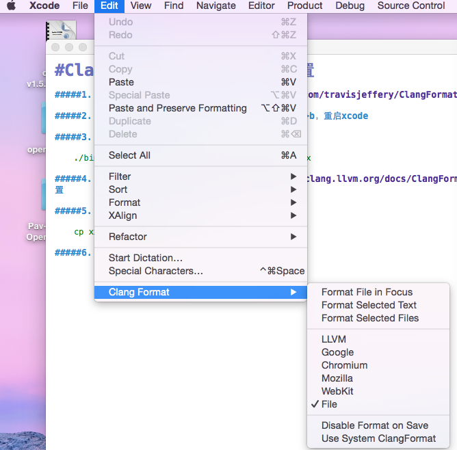

<!DOCTYPE html>
<!--[if lt IE 7]>      <html class="no-js lt-ie9 lt-ie8 lt-ie7"> <![endif]-->
<!--[if IE 7]>         <html class="no-js lt-ie9 lt-ie8"> <![endif]-->
<!--[if IE 8]>         <html class="no-js lt-ie9"> <![endif]-->
<!--[if gt IE 8]><!--> <html class="no-js"> <!--<![endif]-->
    <head>
        <meta charset="utf-8">
        <meta http-equiv="X-UA-Compatible" content="IE=edge,chrome=1">
        <title>    ClangFormat-Xcode个性化配置
</title>
        <meta name="description" content="">
        <meta name="viewport" content="width=device-width">
            <link rel="stylesheet" href="/theme/css/normalize.css">
        <link href='//fonts.googleapis.com/css?family=Raleway' rel='stylesheet' type='text/css'>
        <link href='//fonts.googleapis.com/css?family=Oswald' rel='stylesheet' type='text/css'>
        <link href='http://fonts.googleapis.com/css?family=PT+Mono' rel='stylesheet' type='text/css'>
        <link rel="stylesheet" href="/theme/css/font-awesome.min.css">
        <link rel="stylesheet" href="/theme/css/main.css">

    <link rel="stylesheet" href="/theme/css/blog.css">
    <link rel="stylesheet" href="/theme/css/github.css">
        <link href="/feeds/all.atom.xml" type="application/atom+xml" rel="alternate" title="eric的博客 Atom Feed" />
        <script src="/theme/js/vendor/modernizr-2.6.2.min.js"></script>
    </head>
    <body>
        <!--[if lt IE 7]>
            <p class="chromeframe">You are using an <strong>outdated</strong> browser. Please <a href="http://browsehappy.com/">upgrade your browser</a> or <a href="http://www.google.com/chromeframe/?redirect=true">activate Google Chrome Frame</a> to improve your experience.</p>
        <![endif]-->

        <div id="wrapper">
<header id="sidebar" class="side-shadow">
    <hgroup id="site-header">
        <a id="site-title" href="/"><h1><i class="icon-coffee"></i> eric的博客</h1></a>
        <p id="site-desc"></p>
    </hgroup>
    <nav>
        <ul class="navbar" id="nav-links">
            <li><a href="/category/c.html">C</a></li>
            <li class="active"><a href="/category/ios.html">iOS</a></li>
            <li><a href="/category/ndk.html">NDK</a></li>
            <li><a href="/category/python.html">Python</a></li>
        </ul> 
        <ul id="nav-links">
        </ul>
    </nav>
</header>
    <div id="post-container">
        <ol id="post-list">
            <li>
                <article class="post-entry">
                    <header class="entry-header">
                        <time class="post-time" datetime="2015-04-07T16:30:00+02:00" pubdate>
                            2015-04-07 16:30
                        </time>
                        <a href="/clangformat-xcodege-xing-hua-pei-zhi.html" rel="bookmark"><h1>ClangFormat-Xcode个性化配置</h1></a>
                    </header>

                    <section class="post-content">
                        <h5>1. 下载<a href="https://github.com/travisjeffery/ClangFormat-Xcode">ClangFormat-Xcode</a></h5>
<h5>2. 解压，进入文件夹，打开项目，command+b安装插件，重启xcode</h5>
<h5>3. 个性化配置，打开终端运行</h5>
<div class="highlight"><pre>./bin/clang-format -style=llvm -dump-config &gt; xx
</pre></div>


<h5>4. 编辑xx,参照<a href="http://clang.llvm.org/docs/ClangFormatStyleOptions.html">clang documentation</a>进行配置</h5>
<h5>5. 复制xx到用户根目录，终端运行</h5>
<div class="highlight"><pre>cp xx ~/.clang-format
</pre></div>


<h5>6. xcode选择 Edit -&gt; Clang Format -&gt; File</h5>
<p></p>
<h3>配置备忘录</h3>
<p>根据LLVM格式调整</p>
<div class="highlight"><pre><span class="o">---</span>
<span class="n">Language</span><span class="p">:</span>        <span class="n">Cpp</span>
<span class="p">#</span> <span class="n">BasedOnStyle</span><span class="p">:</span>  <span class="n">LLVM</span>
<span class="n">AccessModifierOffset</span><span class="p">:</span> <span class="o">-</span><span class="mi">2</span>
<span class="n">AlignAfterOpenBracket</span><span class="p">:</span> <span class="k">true</span>
<span class="n">AlignEscapedNewlinesLeft</span><span class="p">:</span> <span class="k">false</span>
<span class="n">AlignOperands</span><span class="p">:</span>   <span class="k">true</span>
<span class="n">AlignTrailingComments</span><span class="p">:</span> <span class="k">true</span>
<span class="n">AllowAllParametersOfDeclarationOnNextLine</span><span class="p">:</span> <span class="k">true</span>
<span class="n">AllowShortBlocksOnASingleLine</span><span class="p">:</span> <span class="k">false</span>
<span class="n">AllowShortCaseLabelsOnASingleLine</span><span class="p">:</span> <span class="k">false</span>
<span class="p">#</span><span class="err">允许单行</span><span class="k">if</span><span class="err">语句</span> <span class="k">if</span> <span class="p">(</span><span class="n">a</span><span class="p">)</span> <span class="k">return</span><span class="err">;原</span><span class="k">false</span>
<span class="n">AllowShortIfStatementsOnASingleLine</span><span class="p">:</span> <span class="k">true</span>
<span class="n">AllowShortLoopsOnASingleLine</span><span class="p">:</span> <span class="k">false</span>
<span class="p">#</span><span class="err">允许单行函数;</span><span class="n">int</span> <span class="n">f</span><span class="p">()</span> <span class="p">{</span> <span class="k">return</span> <span class="mi">0</span><span class="err">;</span> <span class="p">}</span><span class="err">，原</span><span class="n">All</span>
<span class="n">AllowShortFunctionsOnASingleLine</span><span class="p">:</span> <span class="n">None</span>
<span class="n">AlwaysBreakAfterDefinitionReturnType</span><span class="p">:</span> <span class="k">false</span>
<span class="n">AlwaysBreakTemplateDeclarations</span><span class="p">:</span> <span class="k">false</span>
<span class="n">AlwaysBreakBeforeMultilineStrings</span><span class="p">:</span> <span class="k">false</span>
<span class="n">BreakBeforeBinaryOperators</span><span class="p">:</span> <span class="n">None</span>
<span class="n">BreakBeforeTernaryOperators</span><span class="p">:</span> <span class="k">true</span>
<span class="n">BreakConstructorInitializersBeforeComma</span><span class="p">:</span> <span class="k">false</span>
<span class="n">BinPackParameters</span><span class="p">:</span> <span class="k">true</span>
<span class="n">BinPackArguments</span><span class="p">:</span> <span class="k">true</span>
<span class="p">#</span><span class="err">每行字数</span><span class="p">,</span><span class="err">原</span><span class="mi">80</span>
<span class="n">ColumnLimit</span><span class="p">:</span>     <span class="mi">300</span>
<span class="n">ConstructorInitializerAllOnOneLineOrOnePerLine</span><span class="p">:</span> <span class="k">false</span>
<span class="n">ConstructorInitializerIndentWidth</span><span class="p">:</span> <span class="mi">4</span>
<span class="n">DerivePointerAlignment</span><span class="p">:</span> <span class="k">false</span>
<span class="n">ExperimentalAutoDetectBinPacking</span><span class="p">:</span> <span class="k">false</span>
<span class="n">IndentCaseLabels</span><span class="p">:</span> <span class="k">false</span>
<span class="n">IndentWrappedFunctionNames</span><span class="p">:</span> <span class="k">false</span>
<span class="n">IndentFunctionDeclarationAfterType</span><span class="p">:</span> <span class="k">false</span>
<span class="p">#</span><span class="err">最大空行数，原</span><span class="mi">1</span>
<span class="n">MaxEmptyLinesToKeep</span><span class="p">:</span> <span class="mi">2</span>
<span class="n">KeepEmptyLinesAtTheStartOfBlocks</span><span class="p">:</span> <span class="k">true</span>
<span class="n">NamespaceIndentation</span><span class="p">:</span> <span class="n">None</span>
<span class="p">#</span><span class="n">block</span><span class="err">缩进，原</span><span class="mi">2</span>
<span class="n">ObjCBlockIndentWidth</span><span class="p">:</span> <span class="mi">4</span>
<span class="p">#</span><span class="n">Property</span><span class="err">后加空格，原</span><span class="k">false</span>
<span class="n">ObjCSpaceAfterProperty</span><span class="p">:</span> <span class="k">true</span>
<span class="n">ObjCSpaceBeforeProtocolList</span><span class="p">:</span> <span class="k">true</span>
<span class="n">PenaltyBreakBeforeFirstCallParameter</span><span class="p">:</span> <span class="mi">19</span>
<span class="n">PenaltyBreakComment</span><span class="p">:</span> <span class="mi">300</span>
<span class="n">PenaltyBreakString</span><span class="p">:</span> <span class="mi">1000</span>
<span class="n">PenaltyBreakFirstLessLess</span><span class="p">:</span> <span class="mi">120</span>
<span class="n">PenaltyExcessCharacter</span><span class="p">:</span> <span class="mi">1000000</span>
<span class="n">PenaltyReturnTypeOnItsOwnLine</span><span class="p">:</span> <span class="mi">60</span>
<span class="n">PointerAlignment</span><span class="p">:</span> <span class="n">Right</span>
<span class="n">SpacesBeforeTrailingComments</span><span class="p">:</span> <span class="mi">1</span>
<span class="n">Cpp11BracedListStyle</span><span class="p">:</span> <span class="k">true</span>
<span class="n">Standard</span><span class="p">:</span>        <span class="n">Cpp11</span>
<span class="p">#</span><span class="err">缩进，原</span><span class="mi">2</span>
<span class="n">IndentWidth</span><span class="p">:</span>     <span class="mi">4</span>
<span class="n">TabWidth</span><span class="p">:</span>        <span class="mi">8</span>
<span class="n">UseTab</span><span class="p">:</span>          <span class="n">Never</span>
<span class="p">#</span><span class="err">函数大括号位置，原</span><span class="n">Attach</span>
<span class="n">BreakBeforeBraces</span><span class="p">:</span> <span class="n">Linux</span>
<span class="n">SpacesInParentheses</span><span class="p">:</span> <span class="k">false</span>
<span class="n">SpacesInSquareBrackets</span><span class="p">:</span> <span class="k">false</span>
<span class="n">SpacesInAngles</span><span class="p">:</span>  <span class="k">false</span>
<span class="n">SpaceInEmptyParentheses</span><span class="p">:</span> <span class="k">false</span>
<span class="n">SpacesInCStyleCastParentheses</span><span class="p">:</span> <span class="k">false</span>
<span class="n">SpaceAfterCStyleCast</span><span class="p">:</span> <span class="k">false</span>
<span class="p">#</span><span class="err">@</span><span class="o">[]</span><span class="err">里面两边空格，原</span><span class="k">true</span>
<span class="n">SpacesInContainerLiterals</span><span class="p">:</span> <span class="k">false</span>
<span class="n">SpaceBeforeAssignmentOperators</span><span class="p">:</span> <span class="k">true</span>
<span class="n">ContinuationIndentWidth</span><span class="p">:</span> <span class="mi">4</span>
<span class="n">CommentPragmas</span><span class="p">:</span>  <span class="c">&#39;^ IWYU pragma:&#39;</span>
<span class="n">ForEachMacros</span><span class="p">:</span>   <span class="o">[</span> <span class="n">foreach</span><span class="p">,</span> <span class="n">Q_FOREACH</span><span class="p">,</span> <span class="n">BOOST_FOREACH</span> <span class="o">]</span>
<span class="n">SpaceBeforeParens</span><span class="p">:</span> <span class="n">ControlStatements</span>
<span class="n">DisableFormat</span><span class="p">:</span>   <span class="k">false</span>
<span class="p">...</span>
</pre></div>
                    </section>
                    <hr/>
                    <aside class="post-meta">
                        <p>Category: <a href="/category/ios.html">iOS</a></p>
                        <p>Tags: <a href="/tag/ios.html">iOS</a>, </p>
                    </aside>
                    <hr/>

<div class="comments">
    <div id="uyan_frame"></div>
    <script type="text/javascript" src="http://v2.uyan.cc/code/uyan.js?uid=2008694"></script>
</div>
                </article>
            </li>
        </ol>
<footer id="site-info">
    <p>
        Proudly powered by <a href="http://getpelican.com/">Pelican</a> and <a href="http://python.org/">Python</a>. Theme by<a href="https://github.com/hdra/pelican-cait">hndr</a>.
    </p>
</footer>    </div>
        </div>
        <script src="/theme/js/main.js"></script>
    </body>
</html>